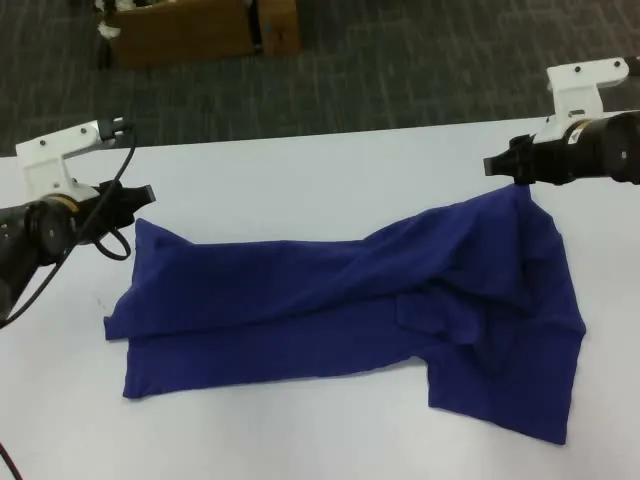

双臂操作 · 衣物折叠首选演示
叠衣服：从纠正数据到真机
主导 DAgger 与纠正数据混合训练，推进数据回流和任务迭代。
93.3%
FP16 TensorRT 项目测试28 / 30 次
93.3% 为独立项目测试结果；演示录像与测试统计分开呈现。
录像可见
抓持、提起翻折、多步折叠，以及撤手后的成品静置。
完整录像 · 00:00–00:27.40 · 从头播放，保留原生进度控制
从训练数据到机器人执行，
围绕真机操作、模型后训练与全身运动能力，推进具身智能的实践。
魔法原子2026.04 至今

让训练改进落到具体动作中。
用连续录像呈现执行过程，用独立测试记录说明结果。
主导 DAgger 与纠正数据混合训练，推进数据回流和任务迭代。
93.3% 为独立项目测试结果；演示录像与测试统计分开呈现。
抓持、提起翻折、多步折叠，以及撤手后的成品静置。
完整录像 · 00:00–00:27.40 · 从头播放，保留原生进度控制
围绕历史信息与训练采样改进策略。
方法、个人贡献和评测成果分别呈现。
本人主导历史记忆与训练关键帧加权采样工作。下方对照基线模型 π0.5 与改进的模型，呈现项目评测结果与代表性执行录像。
主导 π0.5 历史记忆相关改进，围绕多阶段操作中的历史信息开展工作。
主导训练关键帧加权采样，从训练数据采样环节推进策略改进。
三项任务分别汇报基线与改进模型成功率；完整录像展示具体操作过程。
+49.04 个百分点
基线模型 π0.5
改进的模型
同一组六类记忆任务，平均成功率从 4.56% 提升至 53.6%，增加 49.04 个百分点。数据来自本人提供的项目评测；下方三项单任务结果分别展示，录像为两种模型的代表性演示。
后段多次回访已操作位置，可见黄色遮挡物倾倒。
640 × 480 · 25 fps · 无音轨 · 从头完整播放
依次移开遮挡物，结尾三个彩色物体均可见。
640 × 480 · 25 fps · 无音轨 · 从头完整播放
左臂先接近蓝白罐状物，随后右臂靠近手机状物体；末段手部与物体向右侧出框。
640 × 480 · 25 fps · 无音轨 · 从头完整播放
右臂在后段接近并抓持手机状物体；片尾仍在带面区域，未包含明确的最终放置画面。
640 × 480 · 25 fps · 无音轨 · 从头完整播放
左臂接近左侧橙色按钮并下压；录像在左臂仍位于该区域时结束。
640 × 480 · 25 fps · 无音轨 · 从头完整播放
双臂依次操作左侧、蓝色与中间按钮，后段再次操作蓝色按钮，最后退回。
640 × 480 · 25 fps · 无音轨 · 从头完整播放
录像保留各自完整时长。不同演示的初始场景与时长可能不同，不能据此直接比较执行效率；评测成功率来自独立的项目统计。
三组完整录像分别展示基线模型 π0.5 与改进的模型。任务评测结果来自项目统计，录像为代表性执行示例。
六类记忆任务平均成功率为 4.56% → 53.6%，不由本页三项任务的数值简单计算；单条演示不能代替完整统计。
录像用于观察具体行为，不据画面认定失败机制，也不分离历史记忆与关键帧加权采样各自的独立贡献。
本人主导历史 memory 相关工作。以下为真机 memory 推理录像，保留人员盖球、交换杯位与机器人取杯的连续过程。
人员盖住小球并交换杯位，随后机器人抬起右侧杯，小球露出。
640 × 480 · 30 fps · 无音轨 · 从头完整播放
保留人员盖球与换位过程，随后机器人抬起中间杯，小球露出。
640 × 480 · 30 fps · 无音轨 · 从头完整播放
两条录像分别展示具体执行过程，不构成基线与改进对照。上方仿真评测成功率不适用于这两条真机录像。
从数据集动作到自有机器人适配。
运动重定向可视化与全身 VLA 任务分别呈现。
本人完成从数据集 retarget 到本机适配的工作。下方展示 SMPL 到自有机器人的运动重定向可视化。
本人主导全身 VLA，使用 GR00T N1.7 + SONIC 实现床边搬放织物任务。
运动重定向部分为渲染可视化，全身 VLA 部分展示床边搬放织物的真机执行，两类素材分别展示。
保留完整左右分屏与原始动作顺序，观察全身姿态变化。
躯干摆动、手臂配合与交替抬膝步伐。
1280 × 720 · 30 fps · 无音轨 · 完整 10.00 秒
由站立进入倒地、地面姿态，再支撑身体并起身。
1280 × 720 · 30 fps · 无音轨 · 完整 7.00 秒
手臂伸展、身体转向与跨步动作的连续变化。
1280 × 720 · 30 fps · 无音轨 · 完整 10.00 秒
从屈膝准备到反复腾起、落下的全身动作变化。
1280 × 720 · 30 fps · 无音轨 · 完整 11.00 秒
这些录像展示重定向结果的渲染可视化；真机执行情况、控制方法及量化表现需以相应验证材料说明。
本人主导，使用 GR00T N1.7 + SONIC 实现床边搬放织物任务。
在床边依次将条纹、白色和深色织物移向左侧。
1280 × 720 · 30 fps · 从头完整播放
完整 19.90 秒演示，保留原速与全部动作帧。